Sites e sistemas para o seu negócio.
Eu sou o Pedro. Planejo, desenho e programo sites, sistemas com login e aplicativos instaláveis no celular para pequenos negócios. Estudo Ciência da Computação na UVA.
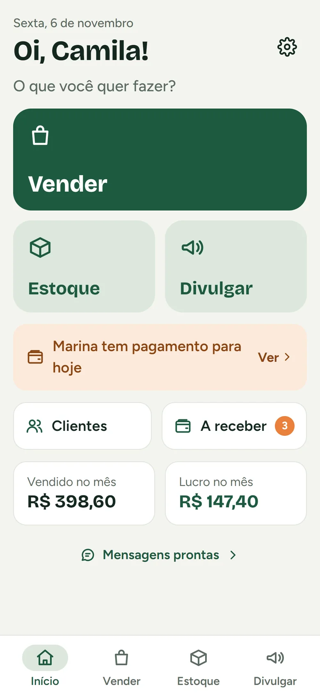
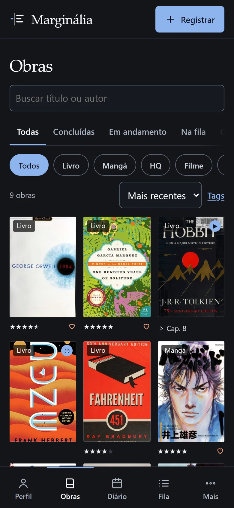
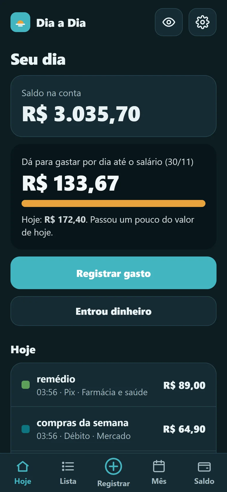
O que eu faço
Em português claroSites
Páginas de apresentação do negócio: rápidas no celular, com textos escritos para o seu cliente e fotos do próprio negócio.
Sistemas
Controle de estoque, vendas, agenda ou finanças, com tela de login e banco de dados. Cada pessoa vê só o que é dela.
Aplicativos no celular
O mesmo sistema instalável como um app, funcionando mesmo sem internet quando isso faz sentido para o negócio.
Projetos
Telas reais, com dados de exemploMarginália
Em usoDiário de livros, mangás, filmes, séries e jogos, onde cada pessoa escolhe o que compartilhar.
- Capas e dados preenchidos automaticamente.
- Diário com resenhas, metas e estatísticas.
- Privado por padrão; compartilhar é decisão registro a registro.
Como funciona
- Para quem
- Pessoas que querem registrar o que leem e assistem e decidir o que mostrar a quem está conectado com elas.
- Decisões
- A privacidade está no banco de dados (Row Level Security: uma regra que impede um usuário de ler os dados de outro), não só na tela. Tem recuperação de senha, política de privacidade e exclusão de dados (LGPD).
- Tecnologias
- Supabase (Postgres, login, arquivos), JavaScript, PWA
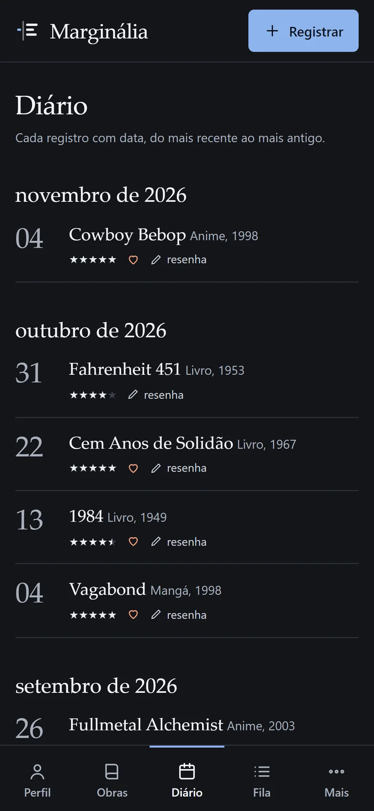
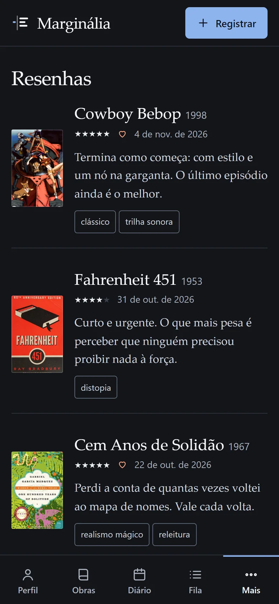
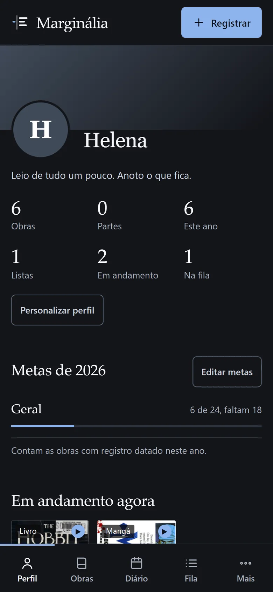
Dados e capas de exemplo (Open Library e AniList)
Vitrine
Em usoEstoque, vendas e fiado de uma vendedora autônoma de cosméticos, no celular e sem precisar de internet.
- Venda com carrinho: dinheiro, Pix, cartão ou fiado.
- Estoque com aviso de produto acabando.
- Anúncio em imagem pronto para o WhatsApp.
Como funciona
- Para quem
- Consultora de cosméticos que controlava tudo de cabeça e no caderno.
- Decisões
- Toda venda pode ser desfeita. O preço sugerido sai da margem escolhida. Os dados ficam no aparelho, com cópia de segurança em arquivo.
- Tecnologias
- JavaScript, PWA (app instalável), IndexedDB (banco no aparelho), Service Worker
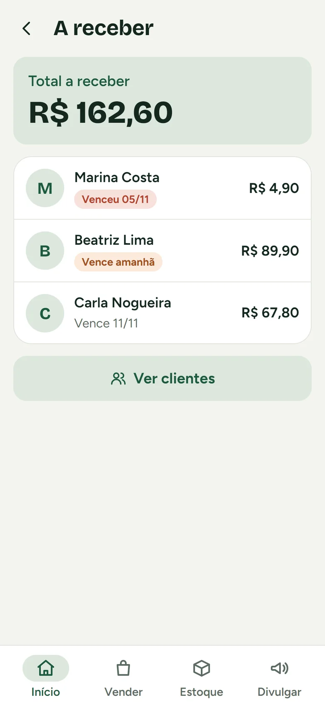
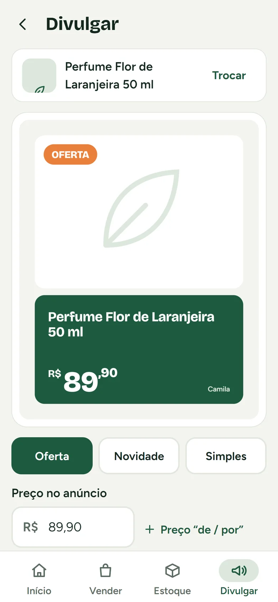
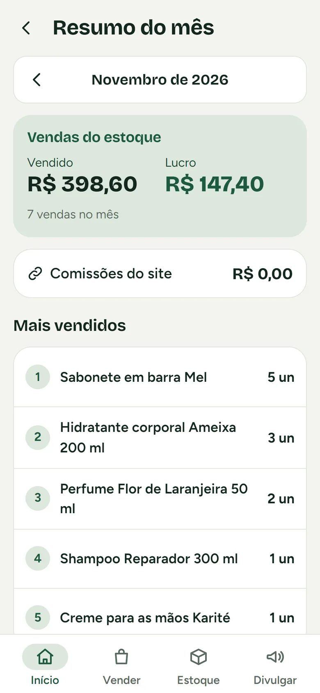
Dados de exemplo
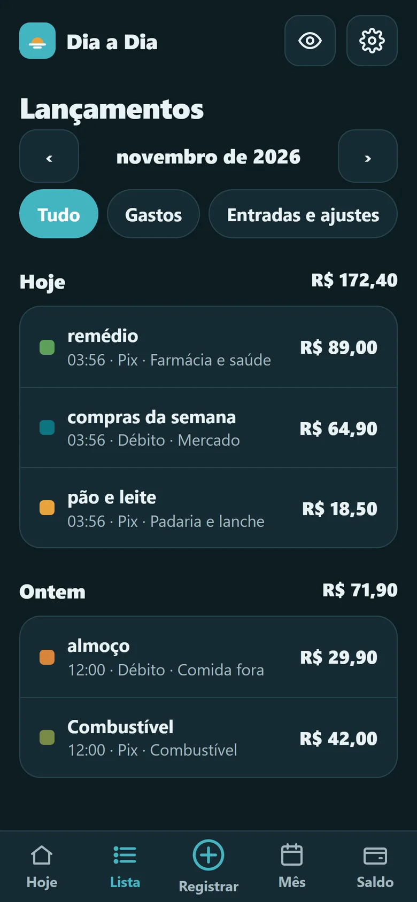
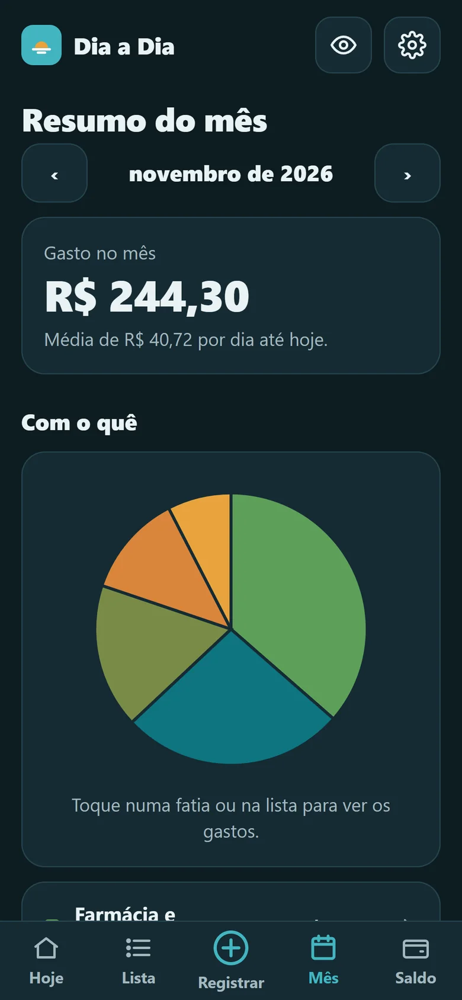
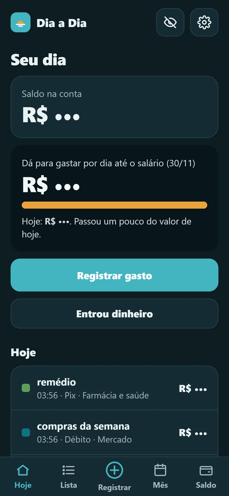
Dados de exemplo
Prumo e Dia a Dia
Em usoControle de gastos pelo celular. O Prumo lê a fatura do banco em PDF; o Dia a Dia registra cada gasto em poucos toques.
- Registrar um gasto leva três toques.
- Resumo do mês por categoria.
- Valores escondidos com um toque, para usar perto de outras pessoas.
Como funciona
- Para quem
- Quem quer entender o mês financeiro sem criar conta em lugar nenhum.
- O que faz
- O Prumo importa fatura e extrato em PDF (Itaú), confere se as somas batem e mostra o mês por categoria. O Dia a Dia registra Pix, débito e dinheiro à mão.
- Decisões
- Se a soma do PDF não bate, o app avisa em vez de mostrar valor errado. Os dados ficam cifrados no próprio celular (criptografia AES-256), com desbloqueio por PIN e digital, e nenhum servidor externo.
- Tecnologias
- JavaScript, PWA, Web Crypto, WebAuthn, pdf.js
Pousada Maré Alta
Demonstração, sem clienteSite de uma pousada fictícia, feito para mostrar o que eu entrego a um negócio de hospedagem.
- Reserva pelo WhatsApp: o hóspede escolhe as datas e a mensagem já abre pronta.
- Quarto, café da manhã, fotos e avaliações em uma página só, rápida no celular.
- Cada preço, horário e avaliação aparece marcado como exemplo.
Como foi feito
- O que é
- Um projeto de demonstração. A pousada, o endereço, o telefone, os preços e as avaliações são inventados. Não existe cliente por trás.
- Meu trabalho
- Logo, paleta e tipografia (Fraunces e Nunito), textos, estrutura das seções, formulário que abre o WhatsApp e ajustes para celular. A base é um template de hospedagem adaptado.
- Imagens
- Fotos de banco de imagens livre (Unsplash), com créditos registrados.
- Tecnologias
- HTML, CSS, JavaScript
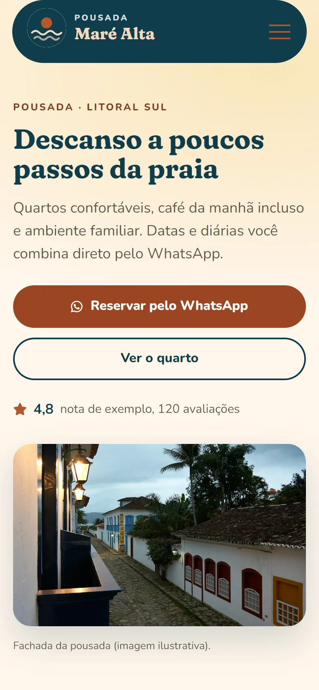
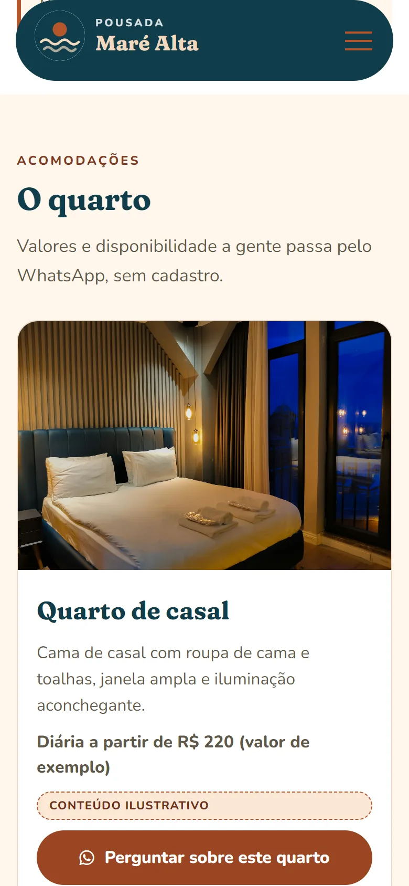
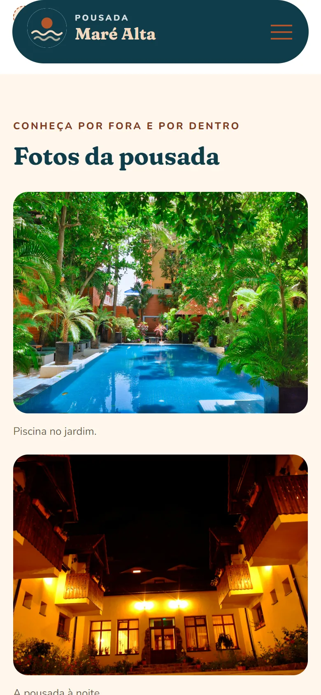
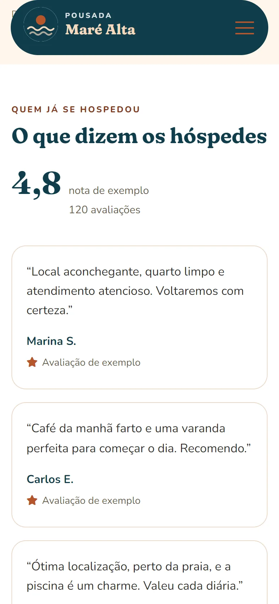
Pousada fictícia · dados de exemplo
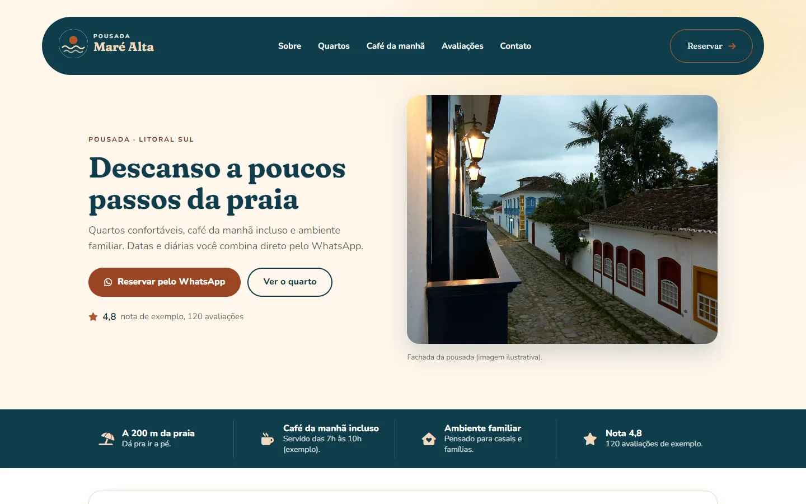
Versão para computador · fotos de Unsplash (créditos registrados) · logo criado para a demonstração
Mais projetos
Em uso, em andamento e da faculdadeNinho
Chat com chamadas de voz e vídeo para dois usuários, em servidor próprio. Verificação em duas etapas, limite de tentativas de login e testes automáticos de tela.
Códice
Cadernos digitais, cada um com visual próprio. Busca, lixeira, histórico de versões, cadernos protegidos por senha e exportação em Markdown.
Scout Fla
Sistema para avaliar jogadores e registrar partidas de futebol: avaliação por jogo, visão da temporada, mapa de calor e quadro tático.
Lumyn
Trabalho da faculdade: conceito de uma startup de saúde emocional. Projeto acadêmico, sem produto em uso. Ver no Behance.
Como eu trabalho
Do primeiro contato ao site no ar- 1
Conversa
Entendo o negócio, quem vai usar e o que precisa funcionar primeiro.
- 2
Desenho
Telas e textos definidos antes de programar. Você aprova antes de seguir.
- 3
Construção
Programo em etapas pequenas e mostro cada uma.
- 4
Testes
Teste no celular e no computador, segurança do login e dos dados, acessibilidade e LGPD.
- 5
Publicação
Coloco no ar e explico como usar.
Sobre
São Pedro da Aldeia, RJQuem faz
Pedro Tavernard, estudante de Ciência da Computação na Universidade Veiga de Almeida (Campus Cabo Frio), no 4º semestre.
Cinco dos oito projetos estão publicados e em uso. Os outros três são um projeto em andamento, um trabalho de faculdade e um site de demonstração, sem cliente, que fiz para mostrar o que sei entregar.
Ferramentas
- JavaScript
- Node.js
- React
- Python
- PostgreSQL
- SQLite
- Supabase
- Git
- Playwright
- PWA